Seasons
Big Brother 1
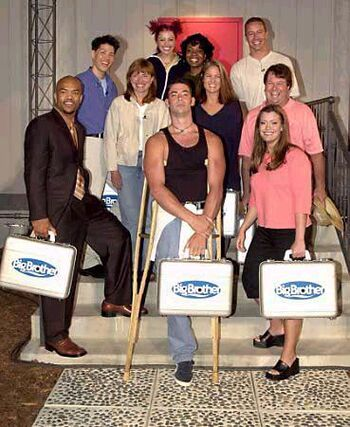Start Date: July 5, 2000
End Date: September 29th, 2000
Season Winner: Eddie McGee
Number Of Houseguests: 10
Days Of Season: 88
Season 1 was more of a social expirement than a game making it completely different from every other season.
Big Brother 2
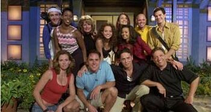Start Date: July 5th, 2001
End Date: September 20th, 2001
Season Winner: Dr. Will Kirby
Number Of Houseguests: 12
Days Of Season: 82
Season 2 was when the big brother game really began with a new power being introduced, the Head Of Household. Season 2 has the most raw gameplay one will get in watching a season because everything is new and no one knows how to play.
Big Brother 3
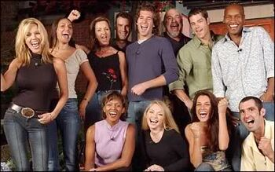Start Date: July 10th, 2002
End Date: September 25, 2002
Season Winner: Lisa Donahue
Number Of Houseguests: 12
Days Of Season: 82
Season 3 is a spinning image of season 2 with two exceptions, the silver Power Of Veto and the Golden Power Of Veto. The silver POV gave did not allow the holder to take themself off of the nomination block, while the golden POV does allow it. They also had the first person to be evicted then voted back in by the houseguests.
Big Brother 4
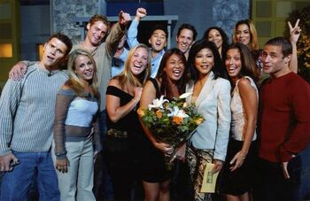Start Date: July 8th, 2003
End Date: September 24th, 2003
Season Winner: Jun Song
Number Of Houseguests: 13
Days Of Season: 82
Season 4 Took out the silver POV and instead intoduced a new season long twist, that being "The X Factor". "The X Factor" had most of the houseguests exes enter the house and playing the game with them. "The X Factor" caused people to completely change how they played the game.
Big Brother 5
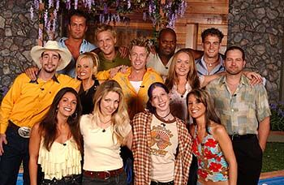Start Date: July 6th, 2004
End Date: September 21st, 2004
Season Winner: Drew Daniel
Number Of Houseguests: 14
Days Of Season: 82
Season 5 Introduced the season long twist dubbed "Project DNA". This twist had two major factors. One houseguest had a twin and was switching in and out of the house with them. The other was one house guest had long lost sibling in the house with them.
Big Brother 6
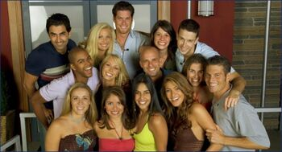Start Date: July 7th, 2005
End Date: September 20th, 2005
Season Winner: Maggie Ausburn
Number Of Houseguests: 14
Days Of Season: 80
Season 6 had one of the most liked casts since season 2 and many houseguests returned to play multiple times. Season 6 introduced the "Summer Of Secrets" twist which gave each houseguest a secret partner that played with them. If two partners made it to the final two the winner was granted 1,000,000 Dollars instead of the usual 500,000 dollars.
Big Brother 7 (All Stars 1)
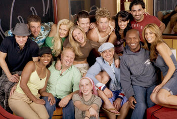Start Date: July 6th, 2006
End Date: September 12th, 2006
Season Winner: Mike "Boogie" Malin
Number Of Houseguests: 14
Days Of Season: 72
Season 7 was an all star season. An all star season means 14 of America's favorite houseguets from the past 6 seasons came back to play again. There were many twists and powers in this season making it the most creative season out of the first seven. After season 7 the season long twists changed from cast oriented to game oriented.
Big Brother 8
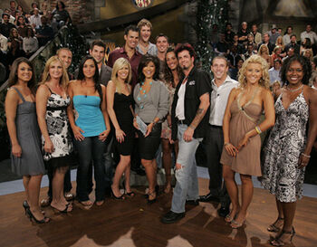Start Date: July 5th, 2007
End Date: September 18th, 2007
Season Winner: "Evel" Dick Donato
Number Of Houseguests: 14
Days Of Season: 81
Season 8 had a lot to live up to being right after the first all star season. Season 8's twist had three houseguests personal rivals enter the house. Along with the rival twist season 6 also introduced "America's Player". "America's player" had one houseguest do America's bidding and every action that houseguest made was voted on by America.
Big Brother 9
Start Date: February 12th, 2008
End Date: April 27th, 2008
Season Winner: Adam Jasinski
Number Of Houseguests: 16
Days Of Season: 81
Season 9 was the first Big Brother US season to air in the winter. The "'Til Death 'Til We Part" twist had all 16 houseguests team up as one houseguest. Meaning they are nominated as one houseguest and evicted as one houseguest.
Big Brother 10
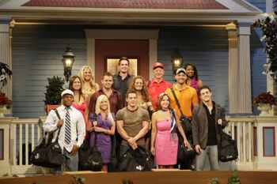Start Date: July 13th, 2008
End Date: September 16th, 2008
Season Winner: Dan Gheesling
Number Of Houseguests: 13
Days Of Season: 71
Season 10 reverted back to the shows original routes. There were barley any twists, they lessened the amout of houseguests, and the live shows from here on out are in front of a live studio audience. Seasons 10's cast was very memorable, they had one of the most liked cast since season 6. Everyone had a part in the plot.
Big Brother 11
Start Date: July 9th, 2009
End Date: September 15th, 2009
Season Winner: Jordan Lloyd
Number Of Houseguests: 13
Days Of Season: 73
Season 11's twist had the houseguests break into teams of four. Meaning if a houseguest won the HOH, then everyone on that houseguests team is also safe for the week.
Big Brother 12
Start Date: July 8th, 2010
End Date: September 15th, 2010
Season Winner: Hayden Moss
Number Of Houseguests: 13
Days Of Season: 75
Season 12's twist was similar to season 8's "Americas Player". Season 12 had a "Saboteur" twist where one houseguest picked a sabotage to act out every episode. The sabotage coud target an individual, a group, or all of the houseguests. If the sabotuer made it to the half way point they won 20,000 dollars. Unlike "Americas Player" the saboteur made their own game moves to keep themselves in the game.
Big Brother 13
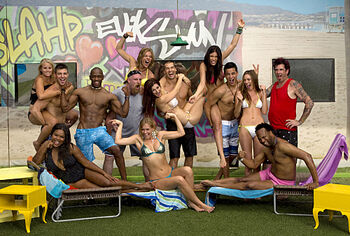Start Date: July 7th, 2011
End Date: September 14th, 2011
Season Winner: Rachel Reilly
Number Of Houseguests: 14
Days Of Season: 75
Season 13 had three different duos from past seasons enter and play the game with the new houseguests. The "Golden Key" twist had everyone team up in duos. However unlike season 9, only one duo could be nominated and the houseguests woulg have to choose between those two houseguests. Who ever is safe will not have a partner anymore so they recieve a golden key which keeps them safe until the top 10.
Big Brother 14
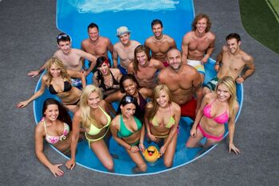Start Date: July 12th, 2012
End Date: September 19th, 2012
Season Winner: Ian Terry
Number Of Houseguests: 16
Days Of Season: 75
In season 14 four past players return to coach the new houseguests that were drafted into teams of four. This causes the coach to have three lives and if all three of their players are evicted, they will leave the house as well. The coach gets 100,000 Dollars if one of their players wins. This changes the game by having two seperate games going on at once.
Big Brother 15
Start Date: June 26th, 2013
End Date: September 18th, 2013
Season Winner: Andy Herren
Number Of Houseguests: 16
Days Of Season: 90
Season 15 is a very unpopular season because of all the racist comments some of the houseguests said while in the house. This season's twist was the "MVP" twist had America vote every week on someone to nominate a third nominee for eviction along with the HOH's nominations.
Big Brother 16
Start Date: June 25th, 2014
End Date: September 24th, 2014
Season Winner: Derrick Levasseur
Number Of Houseguests: 16
Days Of Season: 97
Season 16 introduced a new twist, "The Battle Of The Block". "The Battle Of The Block" changed the game by having two HOHs, therefore having four nominations. The two sets of nominees would then battle each other and which ever team won was safe for the week and the HOH who nominated two would be dethroaned and lose their safety for the week. Season 16 also had "Team America" twist which is very similar to "America's Player". However each individual player can make their own decision.
Big Brother 17
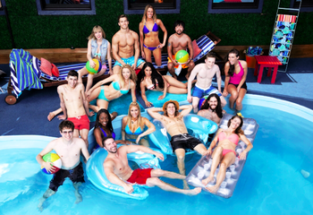Start Date: June 24th, 2015
End Date: September 23rd, 2015
Season Winner: Steve Moses
Number Of Houseguests: 17
Days Of Season: 98
Season 17 kept "The Battle Of The Block" twist for another season and aslo brought back season 5's "Twin Twist" back. This season, along with season 19, hold the record for the most houseguests in a season.
Big Brother 18
Start Date: June 22nd, 2016
End Date: September 21st, 2016
Season Winner: Nicole Franzel
Number Of Houseguests: 16
Days Of Season: 99
Season 18's twist was very similar to season 14's having four teams in the game. Season 18 also created a new twist called the "Roadkill Competition" which is very similar to season 15's "MVP" twist. The difference is that a competition decideds who nominates the third nominee instead of America.
Big Brother Over The Top
Start Date: September 28th, 2016
End Date: December 1st, 2016
Season Winner: Morgan Willett
Number Of Houseguests: 13
Days Of Season: 65
Big Brother Over The Top is a spin off season that aired in the winter only on CBS All Access (Now Named "Paramount+"). The cast included one returner and 12 new houseguests. This season is not on Paramount+ at the moment for reasons unknown.
Big Brother 19
Start Date: June 28th, 2017
End Date: September 20th, 2017
Season Winner: Josh Martinez
Number Of Houseguests: 17
Days Of Season: 92
Seaason 19 is known for the one returner from a previous season reeking havoc on the season. This was a season of many twists dubbed "The Season Of Temptation". Many twists, powers and punishments were released on the houseguests. This type of season becoms a trend for the next few seasons.
Celebrity Big Brother 1
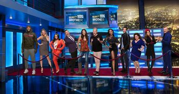Start Date: February 7th, 2018
End Date: February 26th, 2018
Season Winner: Marissa Jaret Winokur
Number Of Houseguests: 11
Days Of Season: 26
Celebrity Big Brother is another spin off show, however unlike Big Brother Over The Top, this show was able to be viewd through cable. It also featured many well known Celebrities such as Shannon Elizabeth, Omorosa, and Meta World Piece.
Big Brother 20
Start Date: June 27th, 2018
End Date: September 26th, 2018
Season Winner: Kaycee Clark
Number Of Houseguests: 16
Days Of Season: 99
Season 20 was had a very similar layout to season 19 except season 20 had a electronic theme rather than the temptation theme. Different twists, powers and punishments were introduced because of this new theme. Season 20 is known as the most popular season of modern big brother.
Celebrity Big Brother 2
Start Date: January 21th, 2019
End Date: February 13th, 2019
Season Winner: Tamar Braxton
Number Of Houseguests: 11
Days Of Season: 29
Celebrity Big brother season 2 was very similar to Celebrity Big brother season 1 by not having a lot of twists. This season featured all new celbrities including Dina Lohan, Kato Kaelin, and Ricky Williams.
Big Brother 21
Start Date: June 19th, 2019
End Date: September 25th, 2019
Season Winner: Jackson Michie
Number Of Houseguests: 16
Days Of Season: 99
Season 21 has a summer camp theme making every twist, power, and punishment follow that theme. Right out of the gate the houseguests have to elect a camp director. The camp director choses four houseguests to battle to stay in the game. The loser is evicted immediatley.
Big Brother 22 (All Stars 2)
Start Date: August 5th, 2020
End Date: October 28th, 2020
Season Winner: Cody Calafiore
Number Of Houseguests: 16
Days Of Season: 85
Season 22 is the second all star season where big brother greats from the shows past (excluding Over The Top and both Celebrity big brother seasons) to play for a chance to prove themselves as a great player.